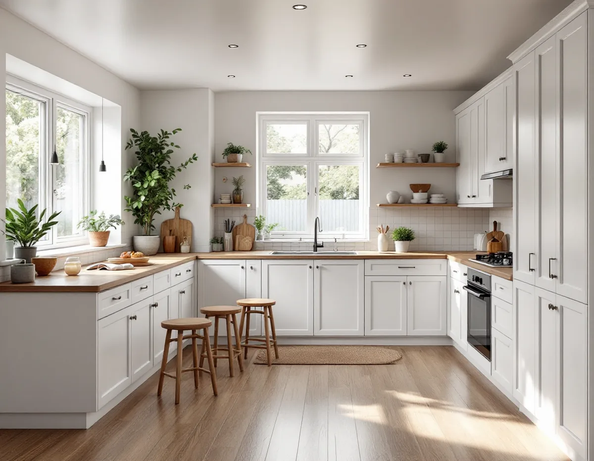
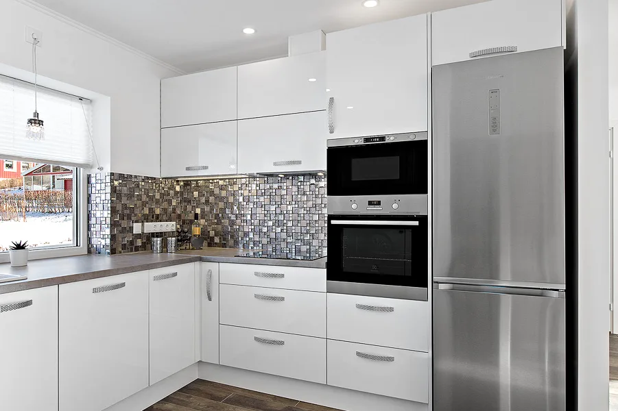
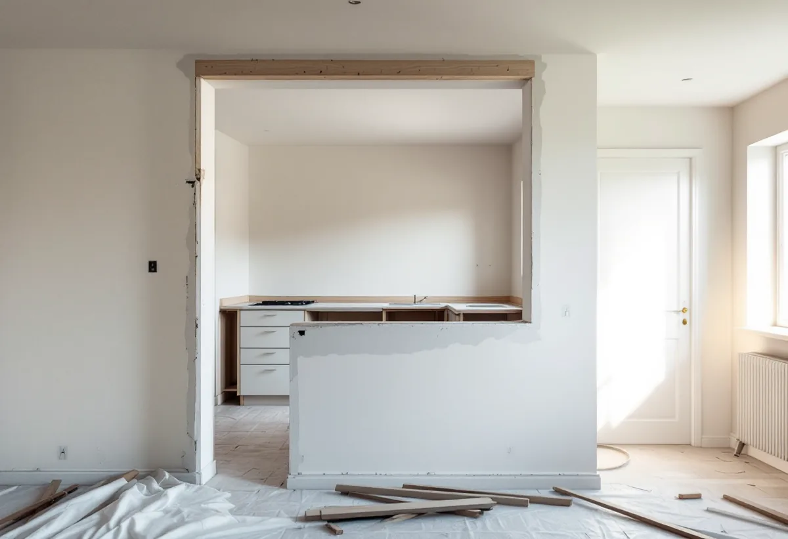

Platsbesök
Gratis besök där vi tittar på kök, väggar, kanal och ledningar.
I Farsta bor många i bostadsrätt i flerbostadshus eller i ett radhus som ägs av en förening, och det avgör vem som ska godkänna ett nytt kök. Geal Entreprenad AB tar reda på vad som gäller för ditt hus, ritar köket och bygger det färdigt.

Stadsmuseet beskriver hur Farsta byggdes som den första ABC-staden i Söderort, där A stod för arbetsplatser, B för bostäder och C för centrum. Farsta centrum invigdes i oktober 1960. Närmast centrum står höga punkthus, längre ut lägre bostadshus, och i utkanterna lades flera stora radhusområden.
Stadens områdesfakta för 2025 räknar i Farsta stadsdelsområde 10 543 lägenheter hos allmännyttan och 4 614 övriga hyresrätter i flerbostadshus, 9 914 bostadsrätter i flerbostadshus, 639 bostadsrätter i småhus och 3 806 småhus med äganderätt. Ett kök i Farsta kan alltså vara en hyresvärds, en förenings eller ditt eget att besluta om.

Ett radhus med bostadsrätt ser ut som ett eget hus, men det är föreningen som äger det. Bostadsrättslagen gäller då fullt ut: styrelsens tillstånd krävs för ingrepp i bärande konstruktion, ändring av ledningar för avlopp, värme eller vatten, ändring av ventilation och annan väsentlig förändring. Styrelsen får bara vägra om åtgärden är till påtaglig skada eller olägenhet för föreningen.
Skatteverket ger rotavdrag i en bostadsrätt för arbete inne i bostaden som du ansvarar för enligt stadgarna. Därför är det värt att läsa stadgarna innan köket planeras – de visar både vad du själv ansvarar för och vad föreningen ska godkänna.
Stockholms stad kräver inget bygglov för att flytta ett kök, men anmälan och startbesked om flytten påverkar bärande konstruktion eller brandskydd, om ventilationen installeras eller ändras väsentligt eller om en ny VA-stam dras i ett nytt schakt. Oavsett om anmälan krävs ska arbetet uppfylla de tekniska egenskapskraven.
I de äldre radhusen och villorna är det ofta väggen mellan kök och vardagsrum som ska bort. Är den bärande behövs konstruktionsunderlag, en anmälan och – i en bostadsrätt – styrelsens tillstånd. Vi tar fram underlaget innan något rivs. När väggen är borta behöver golv, tak och el i båda rummen ofta anpassas, och det är bra att planera det i samma omgång så att köket och vardagsrummet blir färdiga samtidigt.
Staden påpekar att ett kök ska ha tillräcklig frånluft och klara kraven för imkanal, och att en kanal som delas med badrummet måste ha tillräckliga mått. Sotaren kan svara på vad en befintlig kanal tål. I ett flerbostadshus från ABC-stadens tid är ventilationen ofta gemensam för hela huset, och då bestämmer föreningen vilken fläkt som passar.
El och VVS utförs av behöriga installatörer. Bor du i Tallkrogen och vill bygga ut den lilla stugan samtidigt beskriver vi det under attefallshus i Farsta, och mer om kök i allmänhet finns under köksrenovering.

Gratis besök där vi tittar på kök, väggar, kanal och ledningar.
Vi går igenom vad föreningen ska godkänna och vad du ansvarar för.
Planlösning, fläkt, inredning och vitvaror.
Styrelsens tillstånd och anmälan till staden där det krävs.
Rivning, el och VVS via behöriga installatörer, montering.
Genomgång av köket och dokumentation.
Skatteverket godkänner rotavdrag i en bostadsrätt för arbete inne i lägenheten som du själv ansvarar för enligt föreningens stadgar – till exempel att montera fast köksinredning och installera vitvaror i samband med en omfattande renovering, byta köksluckor eller riva innerväggar. Avdraget gäller arbetskostnaden, och Geal drar det direkt på fakturan.
Om köket flyttas eller en vägg öppnas, fläkt och kanal, el och VVS, inredning och vitvaror samt föreningens krav på dokumentation. Efter ett gratis platsbesök får du ett skriftligt kostnadsförslag.
Planering, el, VVS, fläkt och väggar.
Köksrenovering i Stockholm →Takbyte, takbesiktning och plåtarbeten.
Takläggare i Farsta →Tallkrogens småstugor och villorna vid Magelungen.
Takrenovering i Farsta →Småstugor, kulturmiljö och gränser.
Attefallshus i Farsta →ABC-staden, radhus och asbest i våtrummet.
Badrumsrenovering i Farsta →En ny bostad i villan.
Byggföretag i Farsta →Tegel, puts, skivor och trädetaljer.
Fasadmålning i Farsta →Radhus, grupphus och fasadskivor.
Fasadrenovering i Farsta →Småstugor och radhus.
Fönsterbyte i Farsta →Småstugorna i Svedmyra och Sköndal.
Fönsterrenovering i Farsta →Linoleum, plastgolv och klinker i småstugan.
Golvläggare i Farsta →Slipa trägolvet och gå igenom resultatet.
Golvslipning i Farsta →Småstugor, ädelputs och radhus i Söderort.
Målare i Farsta →Skorstensbeslag och plåttak i Farsta.
Plåtslagare i Farsta →Förråd, gäststuga och skärmtak vid småstugan.
Snickare i Farsta →Radhusen, längan och föreningen.
Takbyte i Farsta →Tapet i 1960-talets lägenheter.
Tapetsering i Farsta →Småstugorna och trädgårdssidan.
Tillbyggnad i Farsta →Småstugorna och typritningarna.
Totalrenovering i Farsta →